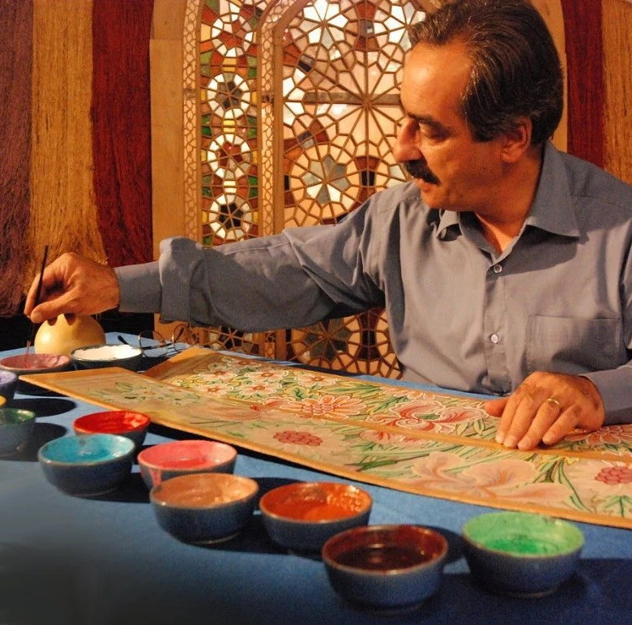

Our Story
Founded in 1998 by artisan and entrepreneur Reza Mehran, our company began with a deep passion for the art of Persian carpet weaving. Reza, a third-generation carpet expert from Tabriz, Iran, grew up surrounded by the textures and traditions of handwoven rugs. Inspired by his family's heritage and a desire to share this cultural treasure with the world, he set out to build a business rooted in authenticity and craftsmanship.
Starting with just a handful of carefully chosen pieces at local markets, Reza's vision grew into a global platform for genuine Persian rugs. Today, we continue his legacy with the same commitment to quality and tradition that shaped our beginning.
